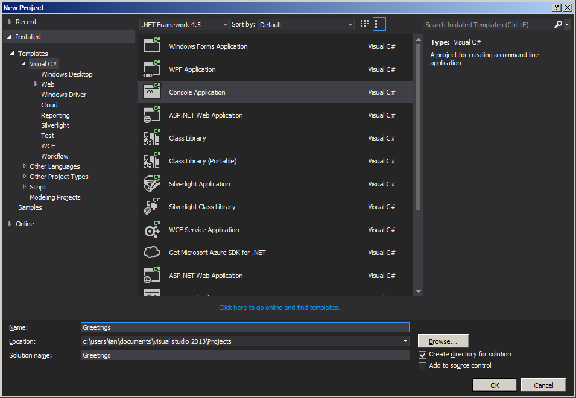
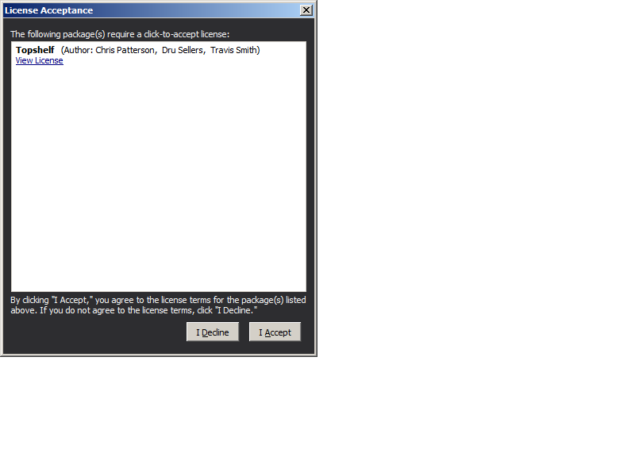

Explorations of the Ports and Adapters and CQRS architectural styles for .NET, Intended as reusable libraries and supporting examples
This tutorial takes you building teh Greetings project, which is Hello World via a Task Queue. The walkthrough will build the example availabe in the Examples folder of Brighter available in the public repo at Greetings Example if you want to follow along there instead of typing in the code.
Create a C# Console Application, targeting .NET 4.5.
Note that you can use any kind of application with Brighter.ServiceActivator, it's purpose is to take messages of a task queue and route to a Request Handler seamlessly. We use a console application as we intend to build a Windows Service which is one of the most common use cases for the Service Activator pattern.
Install the Paramore.Brighter.ServiceActivator package from NuGet
This will install Paramore.Brighter.Serviceactivator and it's dependencies Paramore.Brighter.CommandProcessor, Polly, and Newtonsoft.Json.
Although the Service Activator provides support for a consumer reading messages of an Input Channel, we need to supply a concrete implementation of IAmAMessageConsumer which abstracts the Message-Oriented-Middleware used by that Input Channel for the task queue implementation.
Note that your app.config file will be updated by this install. Although you have no channels as yet, the configuration section for you to add them has been added.
<?xml version="1.0" encoding="utf-8"?>
<configuration>
<configSections>
<section name="serviceActivatorConnections"
type="paramore.brighter.serviceactivator.ServiceActivatorConfiguration.ServiceActivatorConfigurationSection, paramore.brighter.serviceactivator"
allowLocation="true" allowDefinition="Everywhere"/>
</configSections>
<serviceActivatorConnections>
<connections>
</connections>
</serviceActivatorConnections>
</configuration>
Install the Paramore.Brighter.CommandProcessor.MessagingGateway.RMQ package from NuGet
This will install RabbitMQ.Client as a dependency.
This will install the
Use Topshelf to run the console application as a service
Install the TopShelf package from NuGet
You will need to accept the licence for Topshelf
